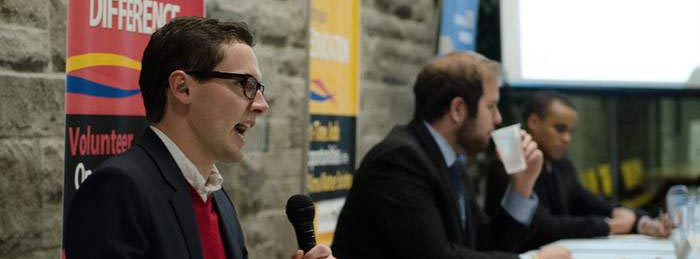

Trustee candidates go head to head
Aulthouse, Erlikhman and Utioh answered questions in front of a crowd of 30 people last night

Candidates spent about two hours discussing and debating issues. (Alex Choi)
The lower ceilidh of the JDUC hosted a debate between the candidates running for undergraduate student trustee last night.
The position, requires a two-year commitment and grants voting privileges on the Board of Trustees — one of the governing bodies at Queen’s. About 30 people were in attendance at the debate as the candidates discussed how they plan to increase opportunities for students and improve the University’s budget.
Early on in the two-hour debate the candidates were asked a question about whether they support Principal Daniel Woolf’s reappointment for a five-year term.
Andrew Aulthouse, ArtSci ’15, said he believes Woolf’s leadership has gained Queen’s a reputation internationally.
“He can lead us to a better university by completing the Queen’s Centre project,” he said. “I also think his focus on the international school is the kind of leadership we need.” Leo Erlikhman, ArtSci ’15, commented on Woolf’s direct confrontation of the issues.
“If we look at his overall quality of a leader, he took us out of fiscal issues, restored Homecoming, restored our reputation, and created the initiation campaign.”
Nathan Utioh, ArtSci ’15, said he was impressed with the Principal’s outreach to the students.
“He has a social media presence,” he said. “He takes his vision and reaches out into the community.” Following that question, the candidates were asked what they think is the greatest challenge currently facing Queen’s.
In his response, Aulthouse focused on the budget plan that the Board of Trustees approves annually. Faculty should get the pension plans that they deserve without changing the budget enough to affect the student experience, he said.
Utioh told the crowd he thinks enrolment should be the focal point for improvment at Queen’s.
“As we continue to grow, we are putting the strain on our University,” he said. “Our University is too big and we don’t have the space to provide the space for new students.”
Erlikhman said he believes the focus should be on the student to faculty ratio and each accessibility in the classroom.
“Every room on campus needs to be accessible for any student with disabilities,” he said.
A prominent theme in the debate was for student involvement and on making students more familiar with what the undergraduate student trustee does.
“If we have 200 students engaged, that’s great, but 2,000 that’s better”, said Erlikhman.
Aulthouse agreed that the position isn’t well known.
Utioh said that the students that he met are “excited” to hear that they have such a significant voice at a high level upon learning about the position.
The candidates all pledged to push the presence of the student trustee on campus and online. They also offered different solutions to the reality that only one student can hold the two-year term.
Aulthouse said he understands that the Undergraduate Student Trustee may be a difficult position to fill alone but that he believes he is self-motivated and can handle the role.
Erlikhman said he wants to look into other universities and see what they can implement at Queen’s, and compare what is or isn’t working.
Utioh wants to implement a first-year intern for the Undergraduate Student Trustee so they immediately can get involved with student government and hopefully influence others and give the students another person to approach to voice their concerns.
The night ended with Lauren Long, the present undergraduate student trustee, initiating the Oil Thigh as per tradition every year at the end of this debate.
Go to: Meet the Student Trustee | Meet Team BGP | Meet Team PDA | Meet Team TNL
Candidates talk AMS services | Future of PEC | Three AMS teams unfload | First exec debate lacks action